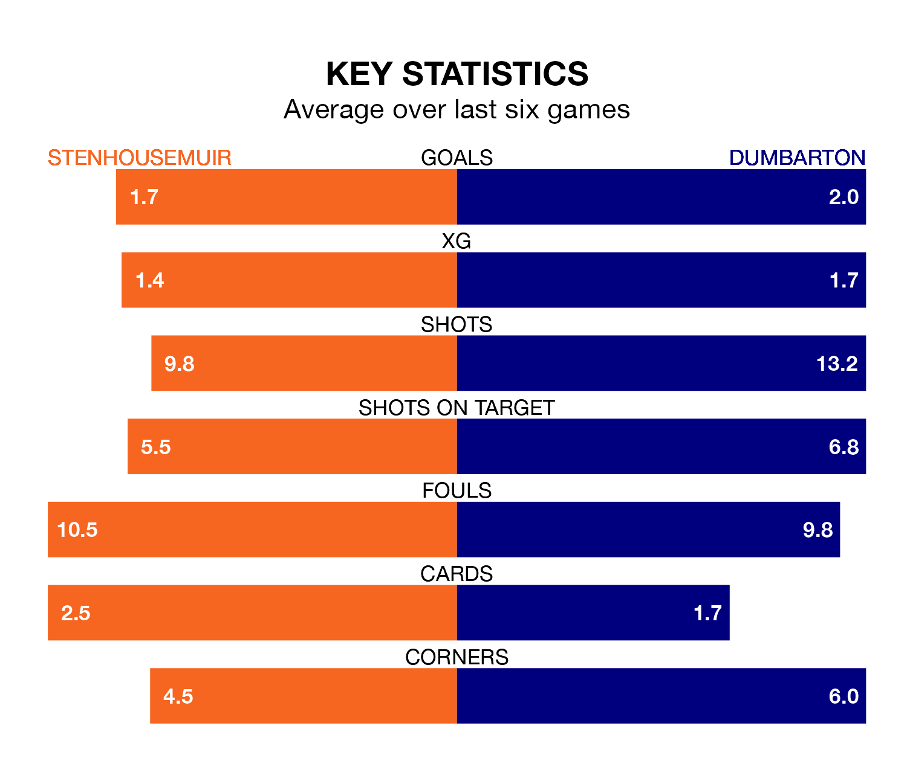

Stenhousemuir host Dumbarton in Saturday's match at Ochilview Park looking to bounce back from defeat last time out in League Two.
The Warriors, who sit top of the league after 22 games, fell to a 2-1 away defeat to Peterhead on January 27.
They face a Dumbarton side who picked up a win in their last match, a 1-0 victory against Elgin City, and who sit fourth in the table.
With 39 goals in 22 games so far this season, Stenhousemuir are the league's highest scorers with 1.8 goals per game. And they are conceding fewer than average, letting in 15 goals at a rate of 0.7 per game.
Dumbarton are also above average scorers, with 1.8 goals per game, compared to a league average of 1.4. They have conceded 1.2 goals per game.
In Matthew Aitken, the Warriors have the league's most on-form striker so far this season. He has notched 13 goals in 22 appearances.
His goal rate of one every 142 minutes is slightly quicker than that of Tony Wallace, the Sons's top scorer with a goal every 154 minutes, and a total of eight goals in 20 games.
In the last 10 years, Stenhousemuir and Dumbarton have played each other on 11 occasions. Stenhousemuir won five of them, Dumbarton four, and they drew twice.
On average, the Warriors scored 1.5 goals and the Sons 1.5 in those matches.
Their last meeting was on December 9, when Stenhousemuir won 1-0 away.
The home side are in fantastic form in League Two, with five wins and one loss from their last six games.
With two wins and two draws over that period, the visitors' form is much worse – they have taken eight points from 18, compared to Stenhousemuir's 15.
Saturday's match will be refereed by Ryan Lee, who has taken charge of 10 League Two games so far this season, issuing one red card and booking 30 players. He has awarded two penalties.
The last Stenhousemuir game Lee refereed was a 2-1 home win against Forfar Athletic on January 6. His last Dumbarton match was their 4-2 win away at Forfar Athletic on December 16.
Updated: 10:40 (UTC), 01/02/24